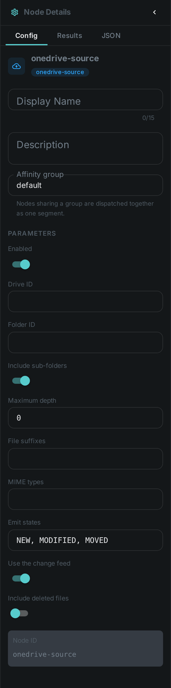
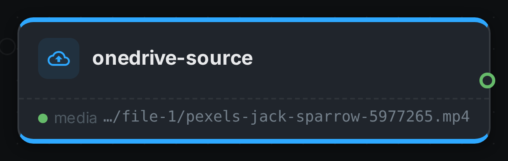

The OneDrive source is a source node — the entry point of a pipeline. Instead of processing a media item, it enumerates files from OneDrive and feeds each one into the graph. A SharePoint document library is the same thing as far as this node is concerned, so team sites work too.
It is differential: a small local index remembers what the drive looked like on the previous run, so a re-run picks up only what is new, changed, moved or removed. Pointing a pipeline at a library of a million files and running it every hour therefore costs almost nothing after the first pass.
Kind |
|
Applies to |
— (source node; produces the media stream) |
Input ports |
None — it is the root of the DAG |
Output ports |
|
Requirements |
CPU only, plus Microsoft credentials on the worker. No shared media mount is needed. |
Persists to |
n/a (source) |
No shared storage required
This node does not need every worker to see the same mount. It emits file references rather than paths, and each worker downloads the files it is asked to process into its own local cache. A pipeline can therefore be spread across machines that share nothing but access to the drive.
Because the download is what a worker does when it actually needs the bytes, enumerating a drive transfers no media at all — only file listings.
|
Tip
|
Every worker that processes OneDrive media needs the Microsoft settings, not just the one running the source node. A worker that only computes hashes still has to fetch the files it hashes. |
Picking up only new files
Two strategies, and the fast one is on by default:
| Strategy | How it works | When to use it |
|---|---|---|
Change feed ( |
OneDrive tells the worker which files changed since the last run, so a run processes just those and skips listing the folders entirely. One request, whatever the size of the library. |
Almost always. Unlike a notification, this is something Microsoft guarantees rather than something that can be lost in transit. |
Folder scan |
Walks the selected folder tree and compares it against the local index. Listing returns metadata only, so this is fast and transfers no media. |
Turn the change feed off to force it, for example while debugging what a pipeline can see. |
A full folder scan still runs periodically — every 24 hours by default — so that a file moved into the watched folder from somewhere far away in the drive cannot stay invisible.
Renames and moves are detected
A OneDrive file keeps its identity when it is renamed or dragged into another folder, so the source
can tell those apart from a delete plus a fresh upload, and reports them as MOVED. Object
storage has no equivalent, which is why the S3 source does not offer that state at all.
Two rules follow from watching a specific folder rather than the whole drive:
-
A file moved out of the watched folder is reported as
DELETED— as far as the pipeline is concerned it is gone. -
A file moved into it is reported as
NEW, even though it existed elsewhere in the drive before.
Configuration

Set on the node in the pipeline editor:
| Option | Meaning |
|---|---|
|
The OneDrive or SharePoint library to read from. Required unless the worker sets a default — see below |
|
Folder to scan. Empty scans the whole drive |
|
Descend into folders below the selected one. On by default |
|
How many folder levels to descend. |
|
Comma-separated file suffixes to accept, e.g. |
|
Comma-separated file types to accept, e.g. |
|
Which changes flow downstream: |
|
Ask OneDrive what changed instead of listing the folders. On by default |
|
Keep files that are in the recycle bin |
Setting up credentials
Credentials are configured on the worker, never on the node, so that they are never stored in a pipeline definition.
The supported way to connect is an app registration with application permissions, which belongs to the organisation rather than to a person and so does not expire:
-
In the Microsoft Entra admin centre, register an application and create a client secret.
-
Give it the
Files.Read.All(orSites.Read.Allfor SharePoint) application permission, and have an administrator grant consent. -
Note the directory (tenant) ID and the application (client) ID.
| Setting | Meaning |
|---|---|
|
Directory (tenant) ID |
|
Application (client) ID |
|
The client secret |
|
Drive to use when a node does not name one |
|
Where downloaded files are cached |
|
Size budget for that cache; the oldest entries are removed past it |
|
Largest file to download. |
|
How long the change feed may be trusted before a full folder scan is forced |
A worker with no Microsoft settings simply does not offer the OneDrive source, and is never asked to run one.
Finding a drive ID
An application connects on its own behalf rather than as a signed-in person, so there is no "my files" to fall back on: a drive has to be named. For a SharePoint site, ask Microsoft Graph for its libraries:
GET https://graph.microsoft.com/v1.0/sites/{hostname}:/sites/{site-path}:/drivesEach entry’s id is a drive ID. Put it in CORTEX_ONEDRIVE_DEFAULT_DRIVE_ID, or in the node’s
driveId option when one pipeline should read a different library from another.
|
Warning
|
A personal OAuth refresh token (CORTEX_ONEDRIVE_CLIENT_ID, CORTEX_ONEDRIVE_CLIENT_SECRET,
CORTEX_ONEDRIVE_REFRESH_TOKEN) also works and is handy while trying things out, but it is not
suitable for a running system: Microsoft replaces the token every time it is used and expects the
caller to save the new one, which a worker cannot do.
|
Seeing it run
Turn on Debug Mode and every node keeps what it produced, on the
card itself. Below is a real run of this node over pexels-jack-sparrow-5977265.mp4.

|
Note
|
This run was captured against an in-repo stand-in for the OneDrive API — there is no way to point a build machine at a real account. Everything below it is the shipping code: the token is really signed and exchanged, the change feed is really diffed against the index, and the file is really downloaded. |
The strip on the card lists what each output port carried — media.
Use Cases
-
SharePoint library ingest — process everything a team publishes to a document library.
-
Continuous ingest — pick up newly uploaded files every few minutes; an unchanged drive costs a single request.
-
Reorganisation-aware libraries — keep metadata attached to a file even when someone renames it or files it away in another folder.
-
Distributed processing — spread heavy work across machines that share no storage.
Related
-
Google Drive Source — the same node against Google Drive
-
S3 Source — the same idea for object storage
-
Filesystem Source — for media on a mounted disk